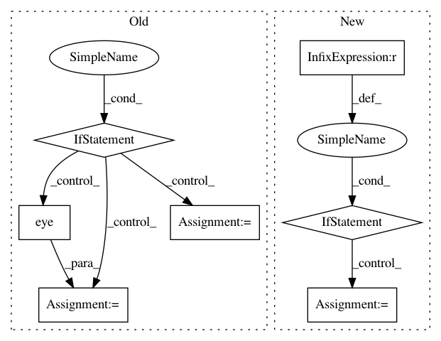

a624cf79454b45ab74dad9493f3c077f09eb91e7,dipy/segment/bundles.py,RecoBundles,recognize,#RecoBundles#Any#Any#Any#Any#Any#Any#Any#Any#Any#Any#Any#Any#,106
Before Change
success = self.reduce_search_space(
reduction_thr=reduction_thr,
reduction_distance=reduction_distance)
if not success:
self.pruned_streamlines = None
self.transf_streamlines = None
self.transf_matrix = None
self.labels = []
// TODO replace with Streamlines
return Streamlines([]), Streamlines([]), Streamlines([])
if slr:
self.register_neighb_to_model(metric=slr_metric,
x0=slr_x0,
bounds=slr_bounds,
select_model=slr_select[0],
select_target=slr_select[1],
method=slr_method)
else:
self.transf_streamlines = self.neighb_streamlines
self.transf_matrix = np.eye(4)
self.prune_what_not_in_model(pruning_thr=pruning_thr,
pruning_distance=pruning_distance)
if self.verbose:
After Change
neighb_streamlines, neighb_indices = self._reduce_search_space(
reduction_thr=reduction_thr,
reduction_distance=reduction_distance)
if len(neighb_streamlines) == 0:
//self.pruned_streamlines = None
//self.transf_streamlines = None
//self.transf_matrix = None
//self.labels = []
// TODO replace with Streamlines
return Streamlines([]), [], Streamlines([])
if slr:
transf_streamlines = self._register_neighb_to_model(
model_bundle,
neighb_streamlines,
metric=slr_metric,
x0=slr_x0,
bounds=slr_bounds,
select_model=slr_select[0],
select_target=slr_select[1],
method=slr_method)
else:
transf_streamlines = neighb_streamlines
// transf_matrix = np.eye(4)
In pattern: SUPERPATTERN
Frequency: 3
Non-data size: 7
Instances
Project Name: nipy/dipy
Commit Name: a624cf79454b45ab74dad9493f3c077f09eb91e7
Time: 2018-04-22
Author: garyfallidis@gmail.com
File Name: dipy/segment/bundles.py
Class Name: RecoBundles
Method Name: recognize
Project Name: SheffieldML/GPy
Commit Name: 17bfccb45736a1877779218b43791de4e56a3a5e
Time: 2016-05-06
Author: ibinbei@gmail.com
File Name: GPy/kern/src/stationary.py
Class Name: Stationary
Method Name: gradients_XX
Project Name: nipy/dipy
Commit Name: 39ddc5f5d2cb75be64204438d60dd3a45d4c300f
Time: 2013-12-21
Author: garyfallidis@gmail.com
File Name: dipy/sims/voxel.py
Class Name:
Method Name: multi_tensor_pdf